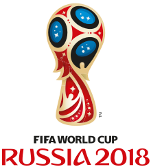
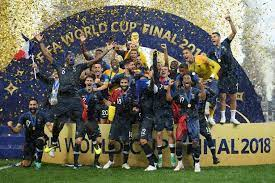
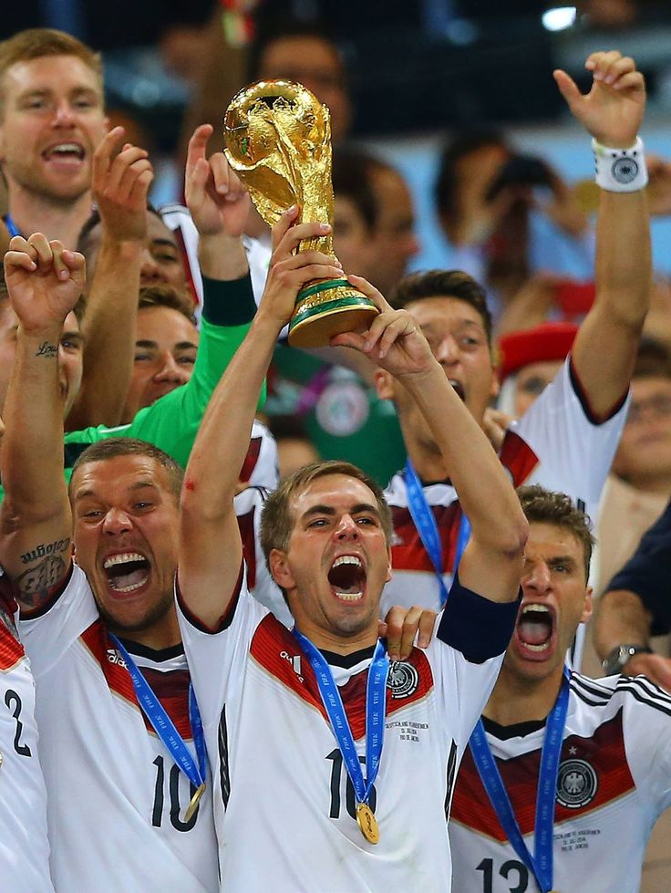
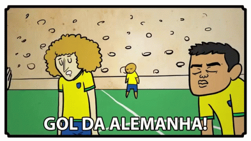
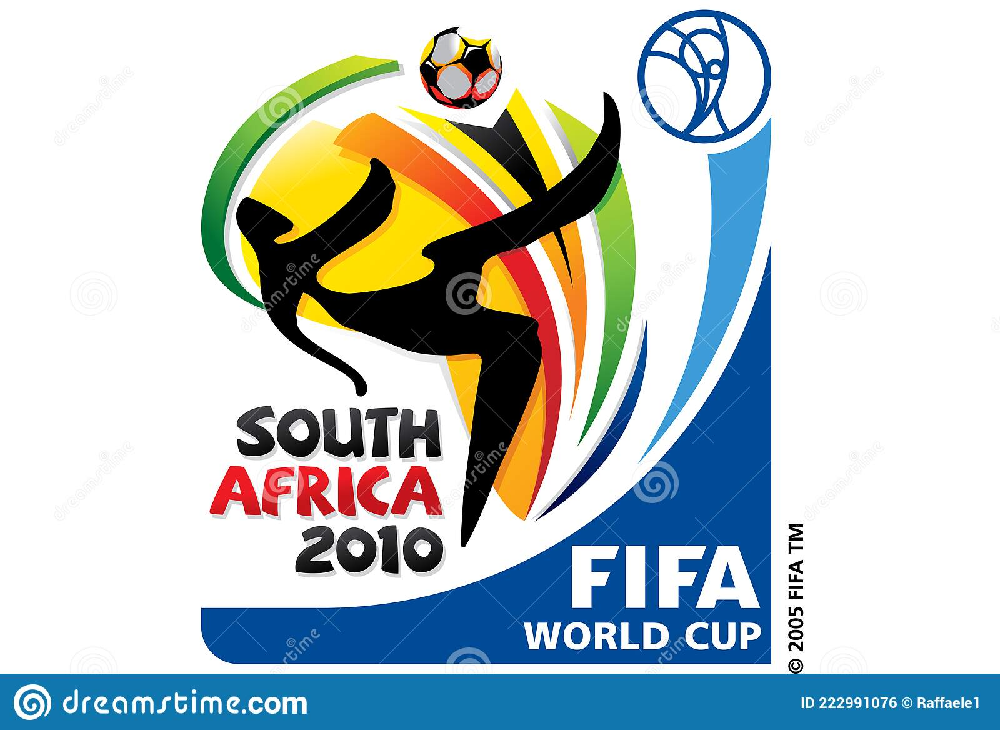
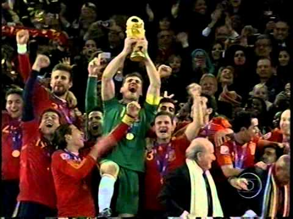

As ultimas copas do mundo que ocorreram neste século:
Copa de 2018:

Campeão:
No dia 15 de julho de 2018 a França se consagrou campeao da copa do mundo.
Ela derrotou com surpreendente facilidade a Croácia por 4 a 2. Foi a consagração da geração liderada por Pogba, Griezmann e Mbappé.

Curiosidades:
A Copa de 2018 teve o maior número de gols contra da história do torneio. Foram 12 - o recorde anterior era de seis, em 1998. O primeiro gol da França na decisão do Mundial foi marcado por Mandzukic, que se tornou o primeiro jogador a fazer um gol contra em uma final de Mundial.
Copa de 2014:

Campeao:
Pela quarta vez na historia a Alemanha se consagrou campeã da copa do mundo. Ela derroutou de forma sofrida Argentina de Lionel Messi por 1x0

Curiosidades:
Nas semifinais da Copa do Mundo de 2014, o Brasil foi eliminado por 7 a 1 sobre a Alemanha, a maior derrota da história da seleção brasileira, o maior placar nas semifinais da Copa do Mundo e o resultado mais trágico enfrentou. A nação anfitriã na história da Copa do Mundo.

Copa de 2010:

Campeão:
A seleção da Espanha foi a grande campeã da Copa do Mundo de 2010, que foi realizada na África do Sul. A seleção levantou a taça ao ganhar da Holanda por 1 a 0 na prorrogação, com gol de Andrés Iniesta.

Curiosidades:
O Mundial de 2010 foi o único (com a óbvia exceção da Copa-1930) no qual não houve seleções estreantes. A honra caberia à Eslováquia, mas a Fifa considera a seleção como uma das ‘herdeiras’ do histórico da Tchecoslováquia.